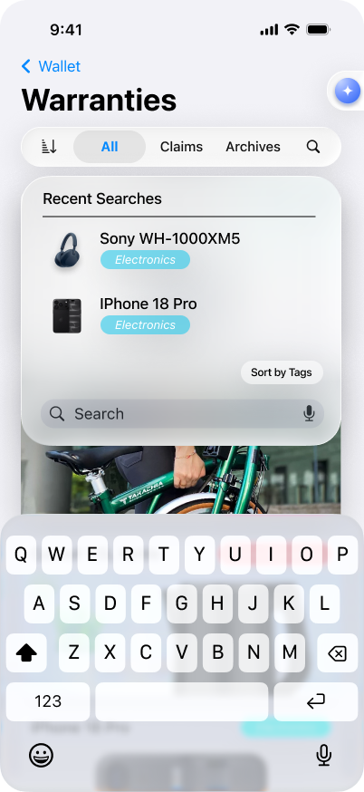
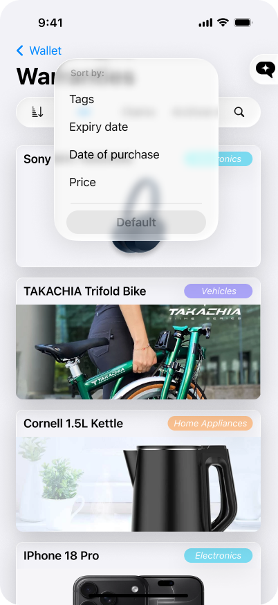

A dedicated app
One place to manage warranty information.
But another download, another interface and more manual entry.
UI/UX case study · DV2008 Interface Design
Rethinking warranty management through Apple Wallet.
An individual case study of a team project exploring warranty management through a familiar experience.
UX Research · Product Ideation · Interaction Design · UI Prototyping · Usability Testing
Explore the case study.

01 / The problem
A warranty is a safety net.
Managing it can feel like another job.
Our team explored how young adults aged approximately 18–25 manage warranties. Receipts go missing, expiry dates slip by, and the steps involved in making a warranty claim can feel unclear.
But the friction started earlier: many participants rarely made warranty claims, so maintaining a separate tracking routine did not feel worth the effort.
How might we help young adults manage warranties and make claims without asking them to build another time-consuming habit?
02 / Research
Team research · 43 survey responses · 6 qualitative interviews
27 of 43 respondents
23 of 43 respondents
22 of 43 respondents
Exploratory research for a student project, not a representative population sample. Some survey questions allowed respondents to select more than one answer, so these groups may overlap.
My contribution / Qualitative research
I contributed to the team’s qualitative user research to understand warranty-tracking habits, user frustrations and claim experiences. Across our research, I became interested in the gap between the protection warranties offer and the effort people were willing to spend managing them.
Five of six interviewees did not actively track warranties. This led me to question whether a standalone app would simply add more work.


03 / The idea
My idea / Selected by the team
I already used Apple Wallet for tickets and passes.
Why not warranties?
I proposed the Apple Wallet warranty pass concept based on my own everyday use. A familiar pass could make information easier to retrieve without asking people to manage another app.
The team compared four directions before choosing this one. The proposal was for merchants to issue passes containing product information, coverage, expiry dates and proof of purchase.
One place to manage warranty information.
But another download, another interface and more manual entry.
Close to the purchase experience.
But limited to one platform, excluding other vendors and physical purchases.
Could collect emailed receipts passively.
But privacy concerns and inconsistent receipt formats complicate the idea.
My proposal · Selected by the team
A familiar place for quick retrieval.
A proposed warranty management experience based on Apple Wallet.
The selected concept still depends on merchant participation and platform feasibility. Its initial focus on Apple Wallet also limits access for people using other platforms.
Extend a familiar behaviour.
Don’t introduce another chore.
04 / My design work
I designed the warranty claim progress screens and associated confirmation and action popups. My focus: what’s happening, what’s next, and when the user needs to act.
I used a claim progress timeline to show the stages of the journey, a status card to explain the current stage, and relevant actions to help users take the next step.


Explore all five states

Original prototype screens. Open any claim progress screen to inspect it at full size. Claim details are sample content.
The smaller moments matter, too


05 / Usability testing
I helped facilitate usability testing by assigning tasks, observing participants, collecting feedback and analysing the results.
All four participants completed the claim-submission task. Although participants could find warranty coverage information, testing revealed discoverability issues with the chatbot and tag-based filtering.
All four completed the claim-submission task in the prototype.
Participants successfully located the coverage information on the warranty pass. However, most did not independently discover the chatbot’s coverage-checking function.
Most participants looked for tag-based filtering under the sorting control rather than in the search bar.
All four completed receipt retrieval.
These findings concern prototype usability. They do not establish real-world claim success, processing speed or integration feasibility.
06 / The refinement
The team moved tag-based filtering from search to the sorting control,
where most participants had initially looked for it.
I suggested moving tag-based filtering from the search interface to the sorting/filtering interface before usability testing.
Most participants went to sorting first to find tags. Some needed prompting.
Tag-based filtering was placed under the Sort By control. The revised placement needs further usability testing.
Tag-based filtering was located inside the search interface, making it difficult to discover.

Tag-based filtering was moved alongside other sorting options, matching where participants naturally looked for it.

A feature is only useful if users know where to find it.
I proposed this change before usability testing, and participants’ behaviour subsequently supported the decision.
The team also clarified the chatbot icon, made coverage details more prominent and refined other interface details following feedback. The comparison above focuses on my pre-test filtering recommendation.
07 / The final concept
One proposed journey, built around information being there when it matters.

Merchant-issued passes could add warranty details after purchase. This remains a proposed integration.
The team designed browsing, search, tag-based filtering, coverage viewing and receipt access, alongside concepts for expiry reminders and an AI warranty assistant.
My claim progress screens and associated popups connect status updates with guidance for repair and collection.
08 / Reflection
Ideation was the hardest part. Our first options were plausible, but creating another app did not necessarily answer the needs of people who already wanted to spend less time on warranties.
Proposing the Apple Wallet concept taught me to look at existing behaviours. Designing claim progress screens taught me to make feedback and next steps explicit. Testing reminded me that my understanding of a control is not the user’s.
With more time, I would explore repair collection and delivery, support for Google Wallet and other platforms, and a smoother end-to-end warranty claim flow. These ideas would need broader usability testing and feasibility work. I would first test whether participants can independently find tag-based filtering in the revised menu and discover the chatbot’s coverage-checking function, recording where they look and whether they need prompting.
A familiar experience.
A more considered journey.